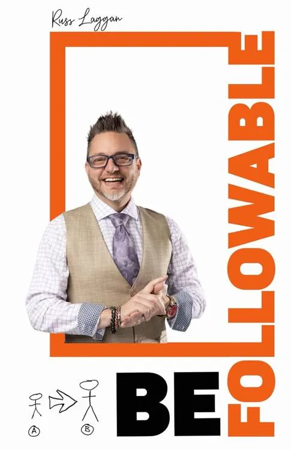

Standing out as a leader is about being the kind of person others choose to follow. Russ doesn’t sugarcoat the hard stuff. The book is a call to action for building relationships that matter and creating a legacy that lasts.

Your influence is only as strong as your followability
The Leader’s Guide to Inspiring Others and Building Lasting Impact. A leadership book for anyone leading a team, growing a brand, or building a movement.
From the book
Standing out as a leader is about being the kind of person others choose to follow. Russ doesn’t sugarcoat the hard stuff. The book is a call to action for building relationships that matter and creating a legacy that lasts.
Wendy ForsytheCOO, eXp Realty
In the book
01
02
03
04
05
Chapter 12
Success is what you do after the money shows up. Each stage builds on the one before it.
01
Out of survival. The first hundred thousand is the one that changes the household.
02
The income stays. The evenings and the weekends come back.
03
Work is a choice. You do it because you want to.
04
Something that lasts past the role. You build other leaders, and the company can run without you in every decision.
05
The work is no longer about your name. You show other people how to build their own.